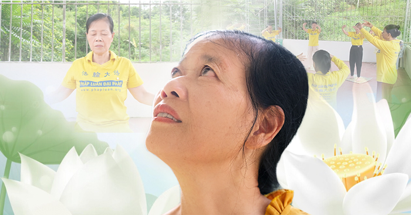

Chuyên mục: Vẻ đẹp Chân Thiện Nhẫn
Cựu giáo viên bị mù, trải nghiệm kỳ tích hồi sinh đôi mắt sáng
Tác giả: BBT — 04/09/2023

Cô Vũ Thị Xuân, giáo viên tiểu học nghỉ hưu, sống tại huyện Bắc Hà, tỉnh Lào Cai. Cô trải qua quãng đời chìm đắm trong bệnh tật và cuối cùng bị mù hoàn toàn. Cuộc đời tưởng quá chừng tăm tối của cô tưởng đã kết thúc. Thế nhưng mọi bất hạnh cô đã trải qua dường như đã kết lại thành một phép màu, cho cô trải nghiệm một kỳ tích…
Năm 2013 tôi cũng bị mù một lần, cũng được cứu chữa. Năm 2015 cũng bị một lần và đến bây giờ nên tôi nghĩ lúc này là nặng lắm rồi và cũng không còn nhìn thấy gì nữa nên là tôi quyết định tự tử.

Câu chuyện của cô Vũ Thị Xuân được chính cô kể dưới đây, có lẽ là một minh chứng cho những điều kỳ diệu luôn tồn tại ở đâu đó trong cuộc sống của chúng ta…
Một cuộc đời bất hạnh
Năm 2020, tôi bị mù cả hai mắt, cái mắt trái của tôi lúc đầu còn 3%, sau đó cũng không nhìn được nữa, còn mắt phải thì mù hoàn toàn 100%. Tôi đi viện thì bệnh viện cũng cho về, bác sỹ nói cứ về khi nào Covid qua đi thì sẽ xuống bệnh viện Bạch Mai để người ta khoét hai mắt của tôi đi để bảo toàn tính mạng. Sau đó tôi về nhà cũng có điều trị nhưng tôi thấy rất không khả quan nên tôi thấy rằng cũng không cần thiết nữa bởi vì là bệnh viện cũng đã cứu chữa tôi rất nhiều lần rồi.
Cuộc đời tôi lúc nào cũng gắn liền với bệnh tật. Ốm đau bệnh tật liên miên, tất cả những bệnh đeo trên thân thể từ khi tôi còn bé cho đến khi lớn lên, như bệnh tim, bệnh thấp khớp, bệnh dạ dày, bệnh cột sống, thoái hóa toàn bộ cột sống, bệnh trĩ… bệnh nào tôi cũng có. Tôi bị liệt chân do bị tai biến, rồi mù mắt, bác sỹ nói do tôi bị glucom góc mở nên không mổ được.
Tôi đã đi viện chạy chữa nhưng mà khi các bác sĩ và giáo sư có nói bệnh của tôi trên thế giới cũng chưa chữa được, đến một lúc nào đó dây thần kinh ở mắt của tôi bị khô cứng lại rồi thì nó sẽ bị mù hoàn toàn.
Năm 2013 tôi đã từng bị mù một lần, nhưng được cứu chữa. Năm 2015 cũng bị lại một lần. Đến lần này, tôi nghĩ bệnh của tôi nặng lắm rồi và tôi cũng không còn nhìn thấy gì nữa nên tôi quyết định tự tử.
Trải nghiệm thần tích
Khi tôi quyết định vào thứ 6 tôi sẽ tự tử thì tình cờ tôi được một đồng nghiệp giới thiệu cho tôi một môn khí công tu luyện có tên Pháp Luân Công, lúc đó tôi chưa từng biết đến môn này. Vì không nhìn được nên bạn đồng nghiệp cho tôi nghe các băng côi giảng, ngày nào tôi cũng mở điện thoại ra để nghe. Ngoài ra, bạn đồng nghiệp còn hướng dẫn tập 5 côi công pháp. Lúc đó mắt tôi chưa nhìn được nhưng tôi vẫn luyện, các bạn học viên đến giúp tôi luyện công, và đọc sách cho tôi nghe.

Sau một thời gian được các bạn học viên đọc sách cho tôi nghe, một hôm, tôi hỏi bạn học viên cho tôi mượn sách được không? Tôi cầm sách nhìn thì tôi không thấy chữ cũng không thấy gì cả, tôi thấy buồn quá ngồi khóc, bạn học viên bảo chị cứ về đi, cứ kiên nhẫn nghe côi giảng và luyện công, nhưng tôi vẫn mượn quyển sách về.
Đến 8 giờ bạn học viên đến đón tôi đi luyện công và tôi nói là tôi đã đọc được chữ, bạn ấy bất ngờ nhưng cũng rất mừng cho tôi. Từ đó trở đi là tôi đọc được chữ. Trước đây tôi chỉ có 38 kg. Khi tôi đọc được sách đến ngày thứ 3 tự dưng người tôi cứ như nở ra, quần áo thì chật hơn, mặt tôi cũng như kích ra, tôi cảm thấy có gì đó nó cứ như đang phát triển trong cơ thể tôi, làm mặt và toàn thân tôi biến đổi rõ rệt.
Tôi cũng không ngờ những biến chuyển đó diễn ra quá nhanh. Bây giờ tôi đã đọc được sách dù chữ to hay chữ bé tôi cũng đọc được hết. Từ tháng 4/2020 đến giờ tôi không phải dùng đến bất kể một thứ thuốc gì, mặc dù không phải dùng thuốc nhưng tất cả các bệnh trong cơ thể đều biến mất hết, tôi rất là khỏe mạnh, tôi không phải đi khám bệnh, cũng không phải đi lấy thuốc ở bất kỳ đâu.
Con đường cứu mình, cứu người
Các bác sĩ quen tôi đều hỏi sao dạo này không thấy đi lấy thuốc, tôi trả lời là tôi học Pháp Luân Công nên giờ không có bệnh gì cả. Sau đó tôi cũng đi khám tổng thể lại một lần nữa, thì bác sĩ cũng ngạc nhiên bảo sao già thế này mà lại không có bệnh tật gì.
Chứng kiến kỳ tích biến đổi sức khoẻ của tôi từ khi tu luyện, sau 3 tháng, 4 anh chị em đã bước vào tu luyện, con trai và con dâu tôi cũng học Pháp. Đến bây giờ nhà tôi có 7 người cùng tu luyện.
Tôi đã chứng kiến có người bị câm nhưng sau khi học Pháp luyện công liền nói được, có người bị rất nhiều bệnh giống như tôi nhưng khỏe mạnh trở lại, con cái và gia đình không phải lo lắng cho người đó nữa, có người ung thư máu, đã truyền hóa chất nhiều lần rồi, nhưng chỉ luyện công học Pháp sau 3 tháng, xuống Hà Nội khám thì không còn bị ung thư nữa, đó là những người mà tôi đã cận kề giúp đỡ, cùng nhau học Pháp, luyện công…
Tôi đi viện mấy chục năm, cả đi hầu đồng mấy chục năm thế mà cũng không chữa được khỏi bệnh của mình, tôi cũng tập yoga nhiều nhưng chỉ có Pháp Luân Công cứu được tôi. Tự mình trải nghiệm những điều kỳ diệu như vậy tôi thấy thật sự Pháp môn này rất tốt, giúp con người nâng cao sức khoẻ, loại bỏ bệnh tật mà lại không mất một đồng nào, hơn nữa còn khiến con người thay đổi tâm tính, thiện hơn, nhẫn hơn, quý như vậy nên hằng ngày tôi luôn nói với mọi người là Pháp Luân Công tốt như thế, mọi người hãy học Pháp đi.
Chứng kiến sự tốt đẹp của Đại Pháp, giờ ai vào nhà chồng tôi cũng giới thiệu Pháp Luân Công cho họ. Giờ chồng tôi toàn nói với mọi người là “môn này tốt lắm trước cô ấy (là tôi) suốt ngày ốm đau bệnh tật nhưng giờ tu luyện không còn bệnh gì nữa”.
Ảnh: Nhân vật cung cấp
Cô Vũ Thị Xuân
Huyện Bắc Hà, tỉnh Lào Cai
Câu chuyện của cô Vũ Thị Xuân là một trong những câu chuyện của gần 100 triệu người trên thế giới đang theo tập môn khí công tu luyện Pháp Luân Đại Pháp.
Quý độc giả có thể tìm hiểu thêm tại website: phapluan.org